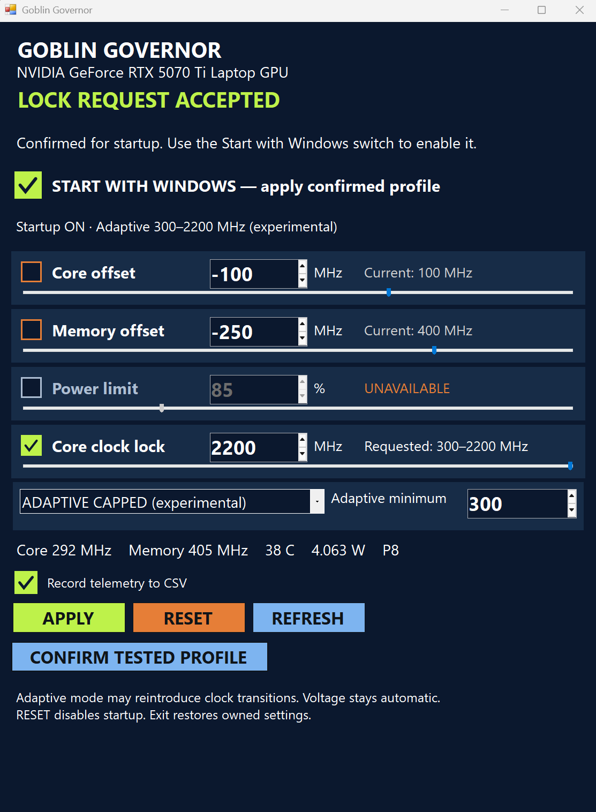

I just needed my bloody laptop to work.
Repeated crashes, an expensive laptop and the experiment that became Goblin Governor.
Read the storyINDEPENDENT TOOLS & EXPERIMENTS
Useful software. Curious experiments. A few hard-earned lessons.
Welcome to the Goblin’s workshop.
01 / LATEST PROJECT
My NVIDIA laptop kept crashing.
So we built a way to put a leash on its GPU.
Simple clock controls, readable buttons and a way back to defaults. Built for a real problem, shared for others to investigate.
v0.1.0 · Free and open source · Not a guaranteed crash fix

Real software. On the laptop that started it all.GPU clocks, AI and what the readings actually tell us.
Small tools built to solve everyday frustrations.
NOTES FROM THE WORKSHOP
The attempts, the discoveries
and the bits that didn’t work.
Repeated crashes, an expensive laptop and the experiment that became Goblin Governor.
Read the storyFixed versus adaptive clocks, and what one short training test showed us.
Explore the experimentALSO ON THE WORKBENCH
A lightweight fullscreen magnifier with Ctrl + Alt + mouse-wheel zoom, built to make the screen easier to use. No public download yet.
Meet the workshop ↗We didn’t start with a product roadmap.
We started with something that needed fixing.